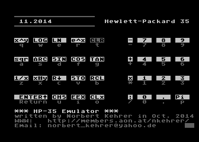
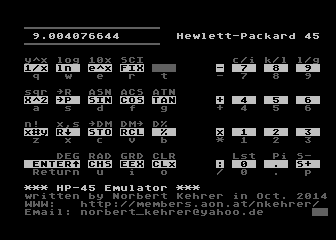
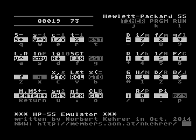
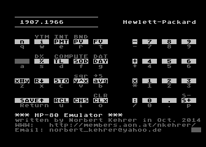
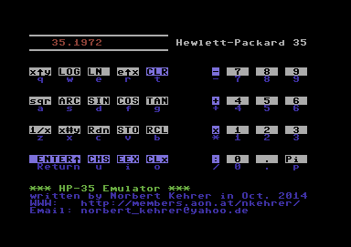
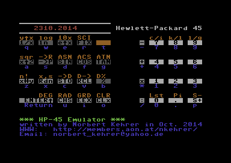
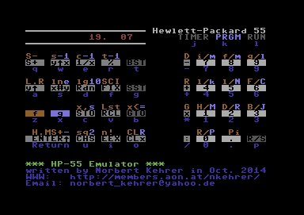
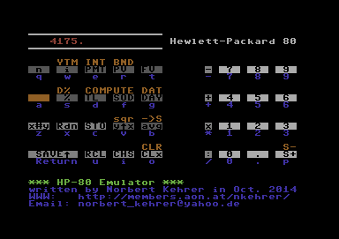

The HP Calculator Emulators for the Atari 800XL and for the Commodore 64
In 1972 the great American company Hewlett-Packard shipped their first pocket calculator.
It was called HP-35, and it was the first pocket calculator with transcendental functions
and the first with the so-called Reverse Polish Notation (RPN).
The HP-35 was a huge success with scientific/engineering users, so HP soon came out with
a similar model for business users. It was called HP-80, and could solve problems like
present and future values of payment streams, trend line calculations (least squares
linear regression), ammortization, date calculation, etc.
Hewlett-Packard continued with the HP-45, an improved scientific model (which I
happen to own :-), and (after the models 65 and 70) with the HP-55, which was programmable
and supported a quartz-controlled stopwatch function.
These (so-called "classic") calculators of HP were based upon a proprietary 4-bit CPU
developed just for that purpose.
I wrote emulators for these four calculators for the Atari 800XL and for the Commodore 64,
which simulate the HP calculator CPU to interpret the original program ROMs of the four models.
This enables you to work with your Atari 800 or C64 exactly like with the great classic HP
calculators with their sophisticated scientific and business functions.
The emulators for the Atari 800XL can be downloaded here:
The emulators for the Commodore 64 can be downloaded here:
You can use these files with an Atari or Commodore emulator or put it on
floppy disks and try it on the real machines.
Much more information on HP's classic (and more modern) calculators can be found at the
Museum of HP Calculators.
In the following you find screenshots of the emulators running on the Atari 800XL and on the C64.
| Atari 800XL: |
|
 |
 |
|
 |
 |
| Commodore 64: |
|
 |
 |
|
 |
 |